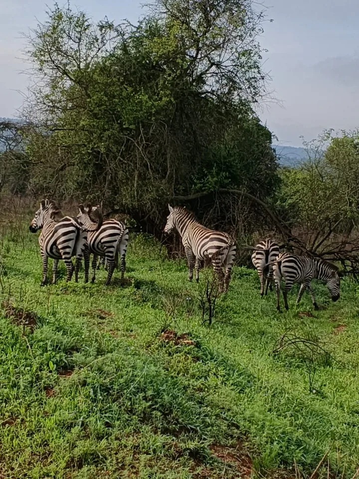
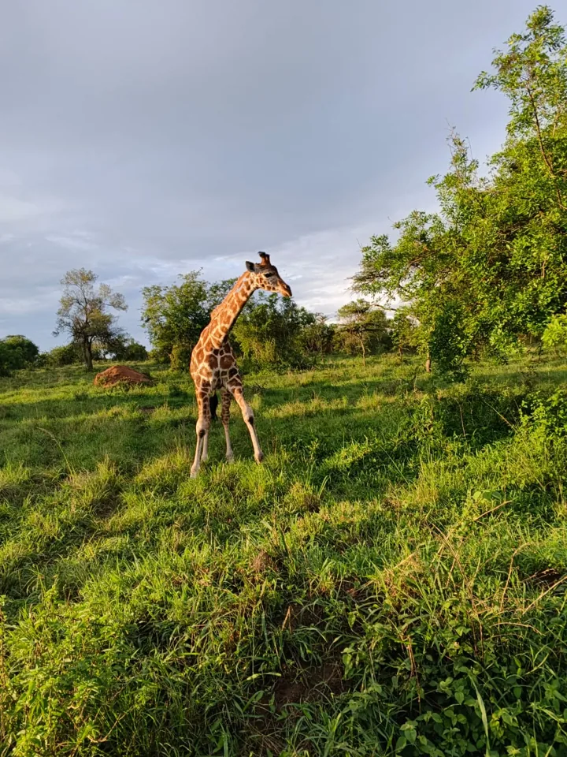
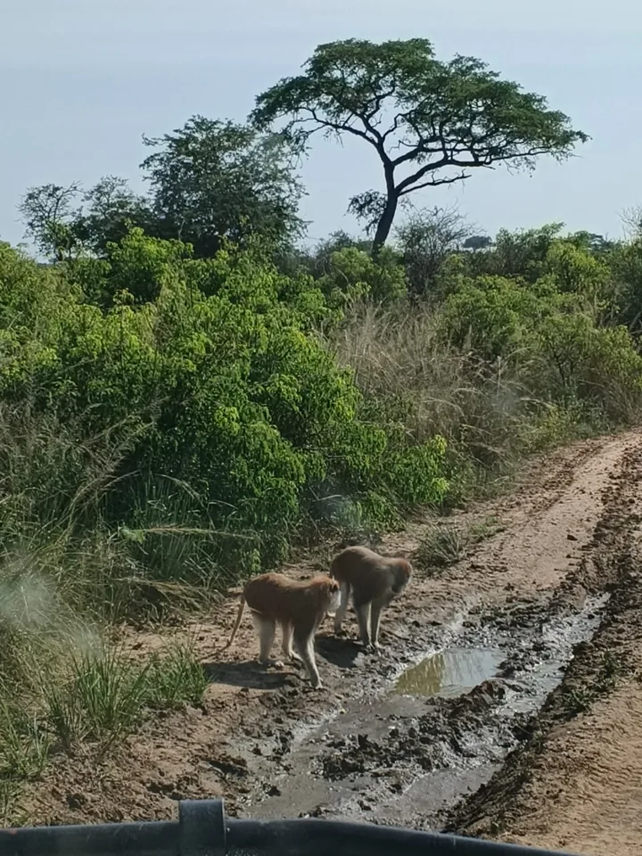
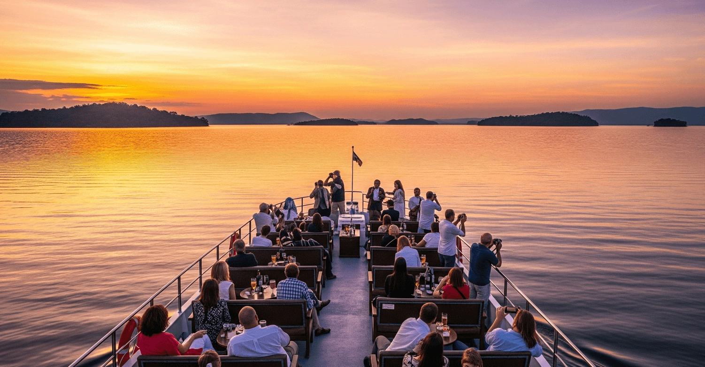

Gorilla Forest Encounters
Bwindi & Mgahinga | Expert Guides | Once-in-a-Lifetime Experience
Gallery
Journey snapshots, destination moods, guest routes, and transport support across Uganda and Rwanda.
Moments from the journey
Zebras on the plains, giraffes in the afternoon light and the calm of a lakeside sunset. Select a photograph to take a closer look.





Safari, in motion
There is a rhythm to life on safari. Watch elephants browse the bush and a family move through the tall grass in two short films from our journeys.
Previews play silently. Use the video controls for sound or full screen.
Plan your own safariElephants browsing · 33 seconds
An elephant family · 16 seconds
East & Central Africa
For safari-only highlights, open the dedicated Safari Gallery.
Bwindi & Mgahinga | Expert Guides | Once-in-a-Lifetime Experience

Murchison Falls | Queen Elizabeth | Kidepo Valley National Parks

20+ breathtaking destinations - click any pin to explore

Contact us now to plan your unforgettable adventure

Business Travel | Conference Transport | NGO Services
Easy Booking
Share your travel ideas, review your enquiry and let our team prepare a quotation.